Renzo Piano buildings 42
Sort
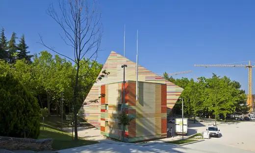
Auditorium del ParcoYear unavailable · L'Aquila Menil Collection1987 · Houston
Menil Collection1987 · Houston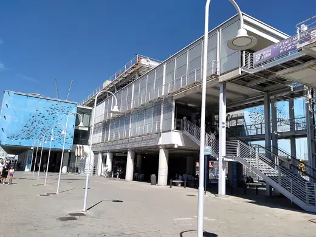
Aquarium of Genoa1992 · Genoa Fondation Beyeler1997 · Riehen
Fondation Beyeler1997 · Riehen Jean-Marie Tjibaou Cultural Centre1998 · Noumea
Jean-Marie Tjibaou Cultural Centre1998 · Noumea KPN Tower2000 · Rotterdam
KPN Tower2000 · Rotterdam Maison Hermès2001 · Tokyo
Maison Hermès2001 · Tokyo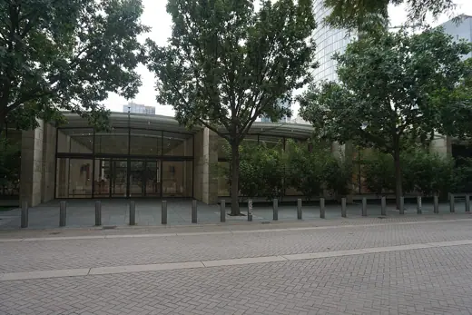
Nasher Sculpture Center2003 · Dallas Padre Pio Pilgrimage Church2004 · San Giovanni Rotondo
Padre Pio Pilgrimage Church2004 · San Giovanni Rotondo New York Times Building2007 · New York
New York Times Building2007 · New York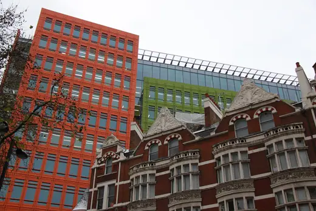
Central Saint Giles2010 · London The Shard2012 · London
The Shard2012 · London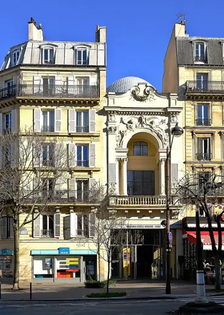
Fondation Jérôme Seydoux-Pathé2014 · Paris Whitney Museum of American Art2015 · New York
Whitney Museum of American Art2015 · New York Centro Botín2017 · Santander
Centro Botín2017 · Santander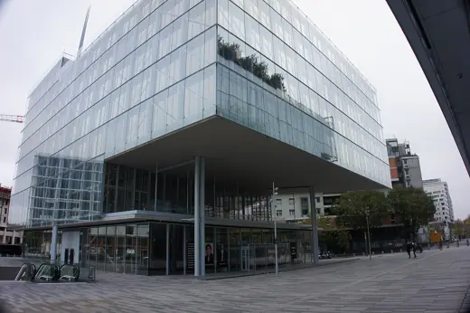
Maison de l'ordre des avocats2019 · Paris Entebbe Children's Surgical Hospital2021 · Entebbe
Entebbe Children's Surgical Hospital2021 · Entebbe İstanbul Modern2023 · Istanbul
İstanbul Modern2023 · Istanbul Centre Pompidou1977 · Paris
Centre Pompidou1977 · Paris Stadio San Nicola1990 · Bari
Stadio San Nicola1990 · Bari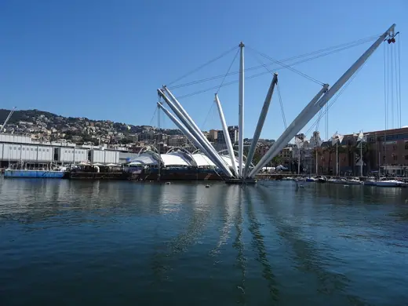
Bigo (Genoa)1992 · Genoa Lyon Museum of Contemporary Art1995 · Lyon
Lyon Museum of Contemporary Art1995 · Lyon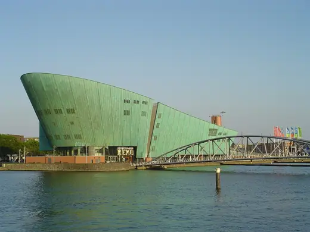
NEMO Science Museum1997 · Amsterdam Aurora Place2000 · Sydney
Aurora Place2000 · Sydney Auditorium Niccolò Paganini2001 · Parma
Auditorium Niccolò Paganini2001 · Parma Biosphere (Bigo)2001 · Genoa
Biosphere (Bigo)2001 · Genoa Auditorium Parco della Musica2002 · Rome
Auditorium Parco della Musica2002 · Rome Pinacoteca Giovanni e Marella Agnelli2002 · Turin
Pinacoteca Giovanni e Marella Agnelli2002 · Turin Exelon Pavilions2004 · Chicago
Exelon Pavilions2004 · Chicago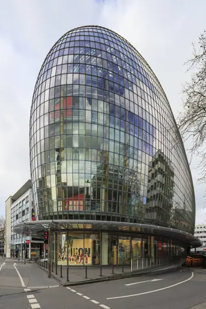
Weltstadthaus Peek & Cloppenburg2005 · Cologne California Academy of Sciences2008 · San Francisco
California Academy of Sciences2008 · San Francisco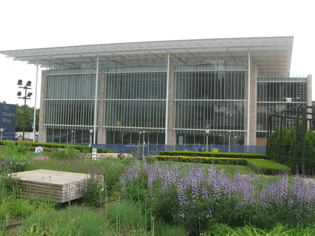
Art Institute of Chicago, Modern Wing2009 · Chicago Astrup Fearnley Museum2012 · Oslo
Astrup Fearnley Museum2012 · Oslo MUSE Science Museum2013 · Trento
MUSE Science Museum2013 · Trento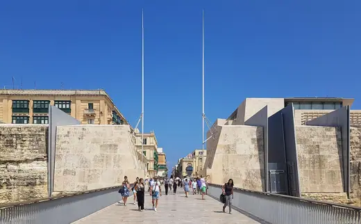
City Gate2014 · Valletta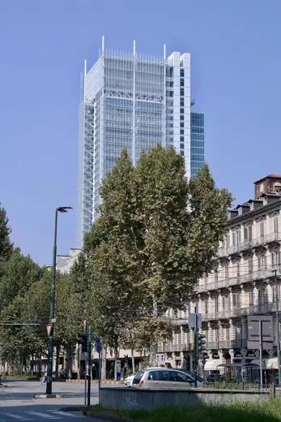
Intesa Sanpaolo Skyscraper2015 · Turin Stavros Niarchos Foundation Cultural Center2016 · Athens
Stavros Niarchos Foundation Cultural Center2016 · Athens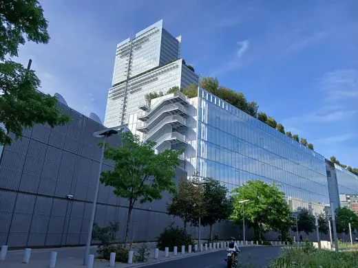
Tribunal de Paris2018 · Paris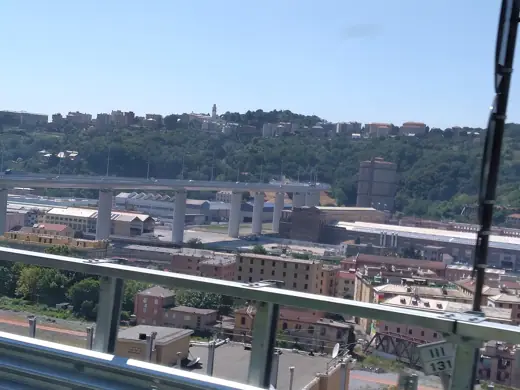
Genova San Giorgio Bridge2020 · Genoa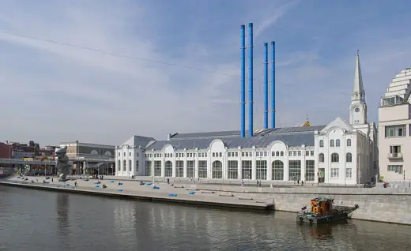
GES-2 House of Culture2021 · Moscow